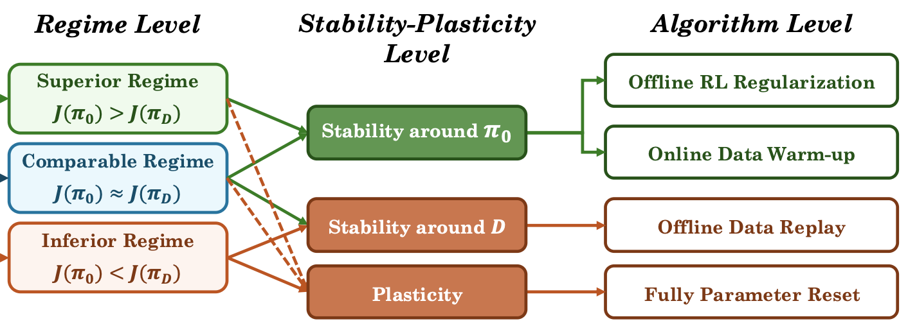
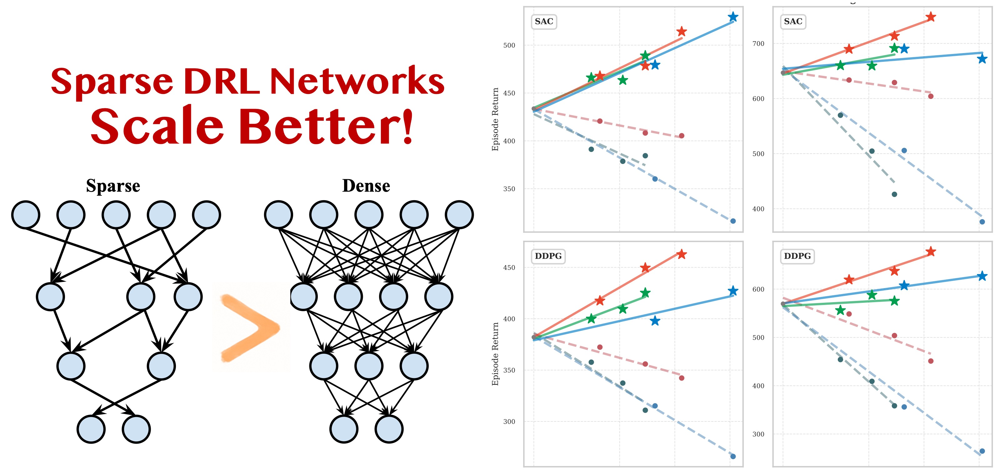
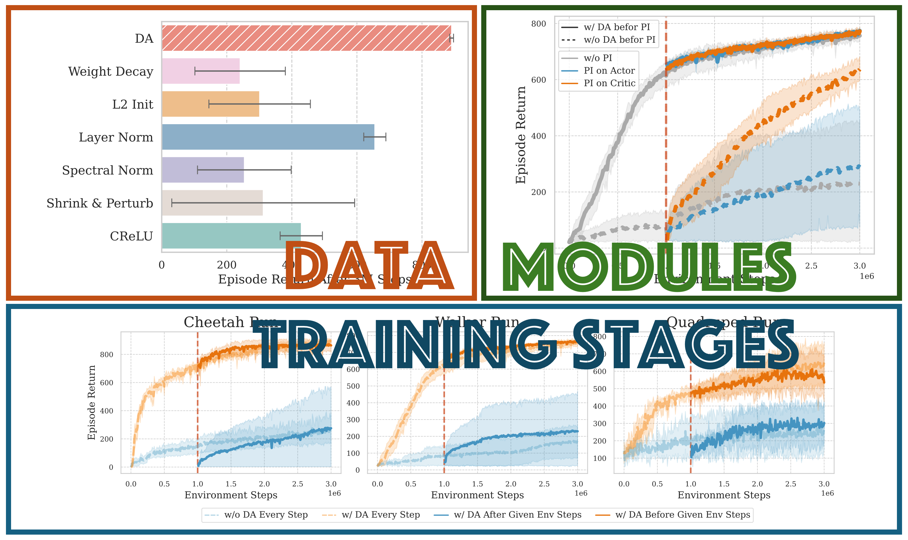
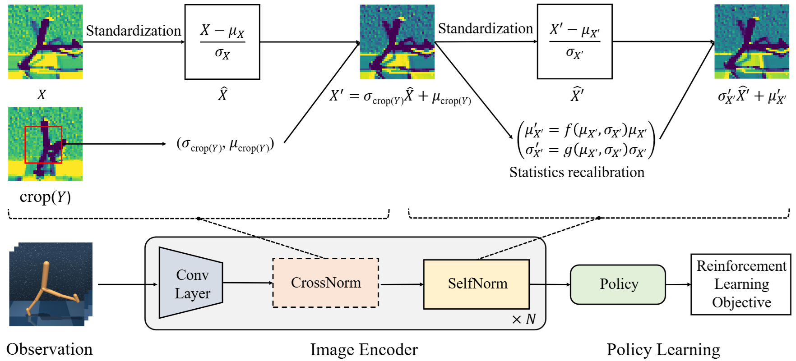

Selected Work
Please see the full publication list on
Google Scholar.
Notation: * indicates equal contribution.
|
The Three Regimes of Offline-to-Online Reinforcement Learning
Lu Li,
Tianwei Ni,
Yihao Sun,
Pierre-Luc Bacon
ICML Workshop on Decision-Making from Offline Datasets to Online Adaptation (Best Paper Award), 2026
RLC Workshop on Continual Reinforcement Learning (oral), 2026
arXiv /
Blog /
Talk /
Thread
A predictive framework for online RL fine-tuning based on a
stability–plasticity principle: we should not only preserve prior
knowledge from the pretrained policy or offline dataset, whichever is
better, but also retain sufficient plasticity to acquire new knowledge.
|

|
Network Sparsity Unlocks the Scaling Potential of Deep Reinforcement Learning
Guozheng Ma*,
Lu Li*,
Zilin Wang,
Li Shen,
Pierre-Luc Bacon,
Dacheng Tao
International Conference on Machine Learning (ICML) (Oral), 2025
arXiv /
code
|

|
Revisiting Plasticity in Visual Reinforcement Learning: Data, Modules and Training Stages
Guozheng Ma*,
Lu Li*,
Sen Zhang,
Zixuan Liu,
Zhen Wang,
Yixin Chen,
Li Shen,
Xueqian Wang,
Dacheng Tao
International Conference on Learning Representations (ICLR), 2024
arXiv /
code
|

|
Normalization Enhances Generalization in Visual Reinforcement Learning
Lu Li*,
Jiafei Lyu*,
Guozheng Ma,
Zilin Wang,
Zhenjie Yang,
Xiu Li,
Zhiheng Li
International Conference on Autonomous Agents and Multiagent Systems (AAMAS) (Oral), 2024
Generalization in Planning Workshop @ NeurIPS, 2023
arXiv /
code
|

|
|
Academic Service
|
Conference Reviewer
- Conference on Neural Information Processing Systems (NeurIPS), 2025–2026
- International Conference on Learning Representations (ICLR), 2026
- International Conference on Machine Learning (ICML), 2026
- International Conference on Intelligent Robots and Systems (IROS), 2026
- Workshops at NeurIPS, ICLR, ICML, AAAI, and RLC
|
|
{kind=link}